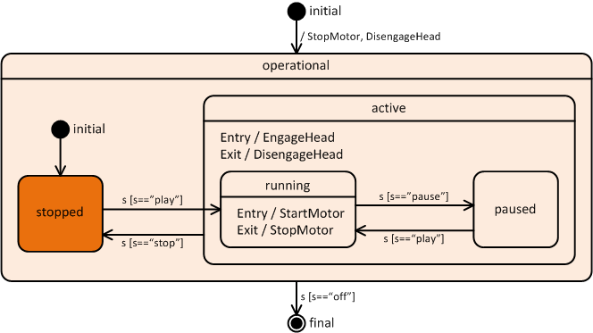

This example implements a simple controller for a cassette player according to the model below:

Press the buttons below to send events to the controller (check brower console for trace output):
Head:
Motor: